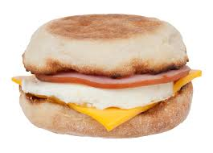

Egg McMuffin

Make an egg McMuffin at home
Is McDonald's too far? This recipe teaches you how to make a McMuffin at home
Ingredients
- 1 english muffin
- 1 slice of ham
- 1 egg
- 1 slice of cheese
Instructions
- Cook your egg over hard in a small skillet
- Meanwhile, cook you piece of ham in another skillet
- When your egg and ham are almost done, cut your english muffin in half and toast in the toaster
- Butter the english muffin halves. Place the cheese slice, followed by the egg and then the ham onto the bottom muffin. Put the top on.
- Enjoy